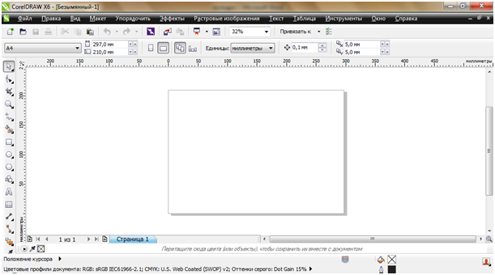
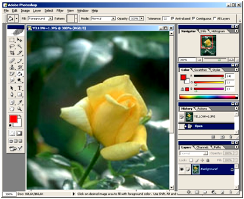

ЛЕКЦИЯ №17. (2 часа)
ТЕМА: «ГРАФИЧЕСКИЙ РЕДАКТОР: НАЗНАЧЕНИЕ, ПОЛЬЗОВАТЕЛЬСКИЙ ИНТЕРФЕЙС И ОСНОВНЫЕ ФУНКЦИИ»
Рассматриваемые вопросы:
1.Векторный графический редактор CorelDraw. Работа с объектами
2. Растровый графический редактор Photoshop
Литература: учебник «Информатика и ИКТ» М.С. Цветкова, «Академия», 2011, стр.203
Ход лекции:
1.Векторный графический редактор CorelDraw. Работа с объектами
Окно программы:

Изображения в редакторе строится посредствам графических примитивов, над которыми можно производить различные действия:
Основные приемы работы в CorelDraw:
Основные объекты CorelDraw:
Упорядоченное и взаимное выравнивание объектов:
Упорядочение объектов – это изменение взаимного расположения объектов относительно друг друга
Группирование – способ объединения объектов, при котором объекты остаются независимыми друг от друга, они только удерживаются вместе.
Комбинирование – способ объединения объектов, при котором объекте сливаются в новый объект с единым контуром и заливкой.
2. Растровый графический редактор Photoshop
В среде Photoshop изображение конструируется при помощи пикселей, при этом можно использовать различные инструменты среды.
Рабочая область/Интерфейс среды Photoshop:

Технология создания изображений:
Изображения в среде Photoshop формируются путем накладывания друг на друга слоев различного типа.
При добавлении нового документа всегда добавляется 1-й обязательный слой - фоновый слой.
Выделяют несколько видов слоев:
ЗАМЕЧАНИЯ: все слои находящиеся под корректирующим будет изменены.
Порядок следования слоев документа можно изменить, используя палитру «слои».
Создание нового документа:
Инструменты Photoshop:
Основные инструменты редактора сосредоточены на панели инструментов. Некоторые инструменты собраны в классы. (уголок на инструменте - альтернативное меню)
Для настройки действия инструментов в среде Photoshop используются диалоговые окна особого типа – палитры.
Все инструменты разбиты на 4 группы:
Фильтры:
К слою в среде Photoshop можно применить фильтры – возможность графического видоизменения изображения по указанному алгоритму (меню - фильтры). Их большое разнообразие: коррекция, видео, имитация, искажение, оформление, размытие, стерилизация, текстура, штрихи, шум, эскиз и т.д.